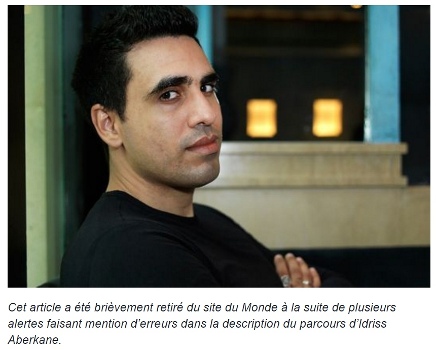

Pour ceux qui ne connaissent pas encore le personnage, Idriss Aberkane est un jeune conférencier connu pour sa défense de « l’économie de la connaissance», concept multiforme qui gravite autour de l’idée selon laquelle la connaissance et sa diffusion seront, dans le futur, les deux piliers d’une croissance économique ininterrompue car ne reposant pas sur la transformation et l’échange de bien matériels.
Ses discours dynamiques mettent fréquemment en avant la valeur immense que représente le monde vivant pour l’évolution des technologies humaines, notamment par le biais du biomimétisme. Certes, les approximations, les raccourcis et les formules mystificatrices parsèment sa pensée, mais il faut lui reconnaître une chose : Idriss est motivé, passionné et formidablement « productif ».
Formidablement productif, car son CV est proprement hallucinant pour un jeune homme de trente ans : trois doctorats, Cambridge University, Stanford University, ENS Ulm, Collège de France, Ecole Polytechnique. 160 conférences, une liste de publications longue comme le bras, des titres d’Ambassadeur, de Conseiller scientifique, de Professeur dans la Silicon Valley, de Professeur à l’École Centrale de Paris, d’Ingénieur de Recherche, et enfin d’Éditorialiste au Point.
De l’importance des guillemets
Formidablement « productif », donc, parce que nous entrons là dans le vif du sujet: oui, le CV d’Idriss pose problème à certains.
Devant le petit tollé suscité par les nombreuses inexactitudes présumées (voir en bas de page), lemonde.fr a d’ailleurs ajouté une mise en garde dès le lendemain:

Je n’entrerai pas dans le détail de tous ces points et je me contenterai d’aborder le plus crucial pour quelqu’un qui se dit « Docteur en neurosciences cognitives » : sa soi-disant scolarité au Cogmaster de l’ENS Ulm, reconnu comme l’une des meilleures formations en neurosciences cognitives d’Europe.
En effet, Idriss Aberkane ne figure ni sur les listes d’anciens élèves de ce master, ni même dans l’annuaire des anciens élèves de l’ENS.
La fin justifie-t-elle les moyens ?
L’objet de ce billet n’est pas de partir en guerre contre le CV gonflé aux hormones d’Idriss Aberkane, car son succès repose en grande partie sur la complicité des médias. Il est entré dans l’écosystème par la mauvaise porte, et la vraie question qui se pose maintenant est celle de savoir si les « bonnes » portes existent pour permettre aux « bons » chercheurs de trouver leur audience et de transmettre leurs savoirs.
Il suffit de visualiser la première minute de son passage sur France 5 pour comprendre le problème. Après une énonciation à n’en plus finir du parcours d’Aberkane, qui baisse les yeux, Anne-Elisabeth Lemoine se plaint d’avoir « déjà mal à la tête » et lui demande d’un ton équivoque : « ça ne tient qu’à moi ? ».
Au visionnage de cette vidéo que la chaine officielle de C à vous intitule, comme par mégarde, « Idriss Aberrante (sic): Comment libérer votre cerveau ? », la notion de culpabilité se dissipe, ou plutôt, se dissout. Dans le fond, Idriss ne fait que servir une bonne vieille soupe, avec des manières fort agréables et un talent certain.
A cet égard, la suite de l’interview est particulièrement instructive. Idriss invente des mots qui tapent à l’œil (neurosagesse), se réfère à des histoires sensationnelles mais invérifiables et peu plausibles (la corde et l’éléphant) et il remixe des concepts parascientifiques, pour ne pas dire ascientifiques, comme pour mieux noyer le poisson. Par exemple, la description qu’il donne du mentalisme correspond plutôt à la programmation neurolinguistique, le mentalisme à proprement parler se définissant en fait comme « l’art du spectacle qui consiste à créer l’illusion de facultés paranormales ». Drôle de mise en abîme quand on connait le personnage…
Certes, il existe des énarques au pedigree validé qui sont de véritables insultes à l’intelligence et des autodidactes sans diplômes qui sont géniaux. Mais Aberkane n’est ni l’un ni l’autre. C’est simplement un gentil charlatan qui a fait sienne la devise «la fin justifie les moyens» et qui, comme bien d’autres avant lui, constate actuellemment le succès retentissant de celle-ci. D’ailleurs, il commence à engranger les bénéfices de cette exposition médiatique : son entreprise personnelle se réclame en effet de contrats avec Forbes, Engie, GDF, Eiffage, Chanel, ou encore… le MEDEF !
De quelle fin parle-t-on, au juste ?
Le personnage ne dupe donc ni les journalistes, ni les chercheurs. Au final, seul l’audimat est dupe.
Mais l’audimat est diverti, donc l’audimat est content, donc les annonceurs sont contents. Et puis Idriss est « numéro 1 », donc Idriss est content, donc tout le monde est content.
Bon, soyons honnêtes et ne tombons pas dans la caricature. Il reste quelques bastions qui résistent et continuent d’offrir un environnement de qualité pour parler science dans le format qui convient, c’est-à-dire dans un format long qui permet de dépasser le sensationnalisme et les formules toutes faites résonnant avec ce que les auditeurs savent déjà : la Tête au carré sur Inter, la Méthode scientifique et la Conversation scientifique sur Culture, les documentaires d’Arte, voire même E=M6 en sont quelques exemples.
Mais à l’image du mythique C’est pas sorcierdisparu du PAF en 2014, la tendance est au déclin tandis que la biologie, les neurosciences et l’intelligence artificielle progressent si rapidement qu’elles auront à n’en pas douter des répercussions majeures sur l’avenir à moyen-terme de nos sociétés. Avenir qui dépend, en théorie, du choix éclairé de citoyens ayant la chance de vivre en démocratie.
Dans ce contexte, l’exposition dont bénéficie Idriss Aberkane est contre-productive. Pas seulement parce qu’il occupe un temps d’antenne qui aurait pu être mieux employé, mais parce qu’elle donne une fausse image de ce que sont les neurosciences au grand public: d’une part, elle renforce le discrédit des chercheurs, et d’autre part elle renforce l’idée selon laquelle il serait possible de goûter aux fruits de la science comme on profite d’une émission de divertissement.
«Trois doctorats, c’est pas grand chose du tout»
Quand on entend Aberkane dire, sans que quiconque sourcille, «trois doctorats c’est pas grand chose du tout, dans le sens où j’ai juste eu la chance de pouvoir faire d’une passion, d’un hobby, un diplôme», on se dit qu’il y a un vrai problème de représentation de ce qu’est le doctorat en France. Car un doctorat, c’est minimum 3 ans de travail à temps plein, et certainement pas la transformation chanceuse d’un hobby en diplôme! C’est la volonté d’aller au bout de soi-même et de toucher ses limites. C’est accepter d’être déconnecté du monde réel pour quelques temps et de s’y reconnecter sans renier ce qu’on a appris: à savoir que c’est l’ignorance et non la connaissance qui est le moteur de la science véritable.
En théorie, ce qu’un journaliste devrait chercher quand il s’entretient avec un chercheur, ce ne sont pas seulement de nouvelles réponses, mais aussi et surtout de nouveaux points d’interrogation. Car la recherche, c’est avant tout l’ascension - souvent douloureuse - vers de meilleures questions et tout le défi de la communication scientifique est d’en faire saisir à autrui le sens et l’importance.
Idriss Aberkane est sympatique, cultivé comme Pic de la Mirandole, et il est peut-être convaincu que tous les moyens sont bons pour susciter la curiosité de son auditoire. Malheureusement, il semble ignorer que le goût de la curiosité ne sert pas à grand chose sans le goût de l’effort intellectuel, pour lequel aucune formule magique n’a encore été inventée.
Ce dernier dépend avant tout de l’éducation, du crédit et du respect accordé à ceux qui lui dédient leur vie, et enfin, du temps, du temps, et encore du temps. Car en cette matière, l’appétit vient en mangeant.
Mais pas n’importe quoi.